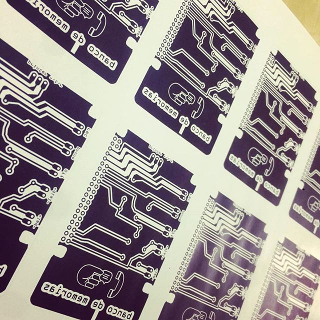
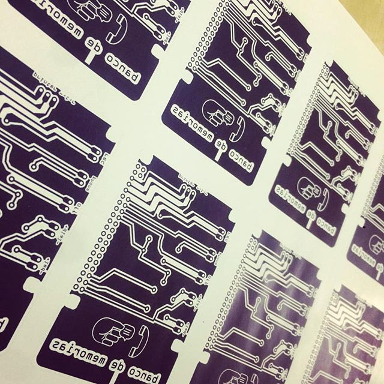

Banco de Memorias
Categorías: Instalación Interactiva
Fecha: Abril 2019
Banco de Memorias es una pieza de arte participativo basada en un dispositivo telefónico que busca activar la memoria colectiva del barrio Santa María la Ribera en el espacio público. El dispositivo es capaz de reproducir y grabar relatos de los vecinos y visitantes del barrio y otorgar un recibo por cada uno de las narrativas que sean depositadas. De esta manera, la pieza busca compartir y promover la participación comunitaria desde un enfoque lúdico y creativo, así como propiciar vínculos afectivos con el entorno y sus habitantes a partir de la recuperación de historias personales y colectivas
Lenguajes de Programación
Python
C++
Software
Arduino
Audition
Audacity
SuperCollider
El proyecto fue desarrollado en colaboración con Alejandro Rosas, Dora Bartilotti y Arturo Zuvieta y esta pieza hibrida dos elementos desde su desarrollo formal y conceptual, por un lado el funcionamiento y estética de un teléfono público como interfaz de comunicación sonora instalada en el espacio público. Por otro lado, la apropiación metafórica de un banco financiero al formularse una propuesta que plantea el valor histórico, cultural y afectivo del recuerdo, así como el valor e importancia de la participación barrial en la socialización de su identidad.
La pieza está conformada por diversas partes de teléfonos que se encuentran en desuso, mismas que fueron intervenidas por un circuito, una raspberry, una interfaz de audio y un amplificador que permiten grabar y reproducir relatos orales a través de su auricular, así también contiene una mini impresora térmica que da un recibo por cada memoria depositada. De esta manera, por cada memoria corresponde un número de participación, el cual puede ser anotado en un directorio telefónico dispuesto junto al dispositivo y con el cual el participante podrá acceder a su memoria o de alguien más al digitar o discar el número. El dispositivo fue montado en una estructura metálica con una serie de instrucciones de participación para instalarse y activarse en el espacio público.
El proyecto fue exhibido el mes de noviembre en el Centro Cultural El Rule

 
